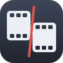
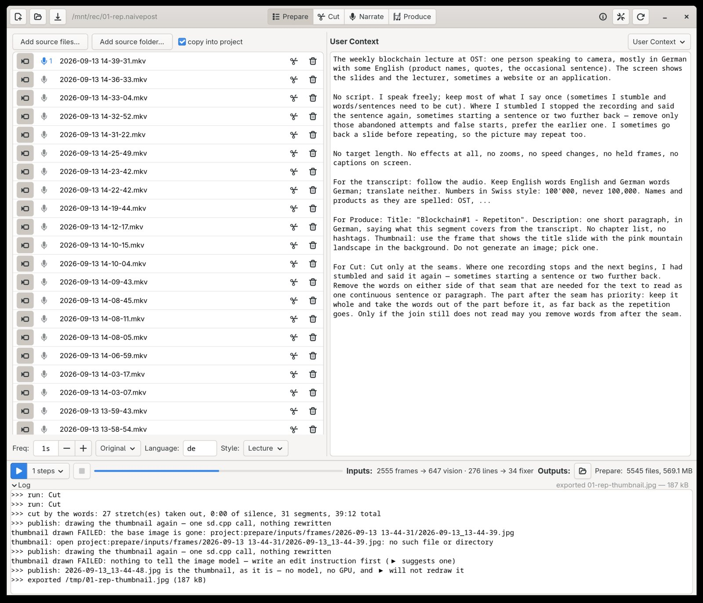
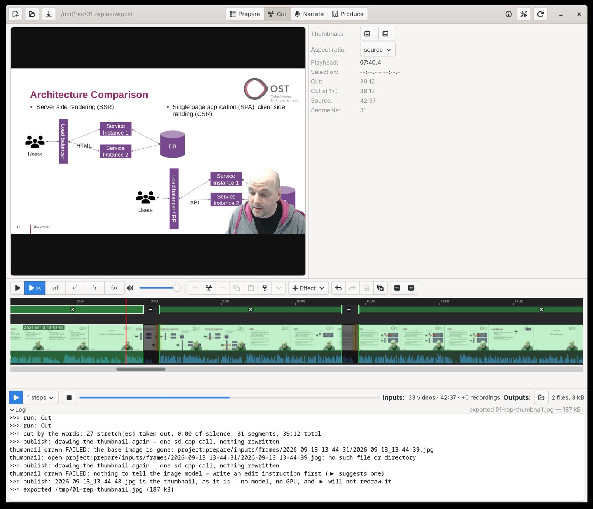
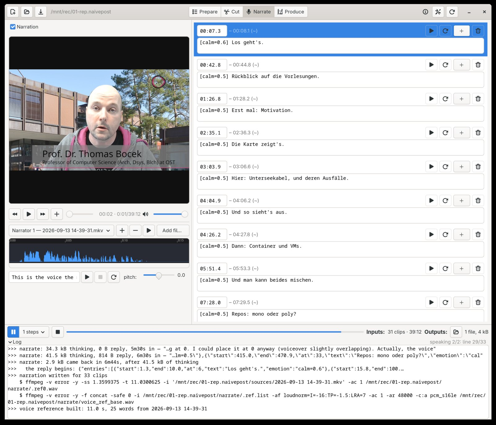
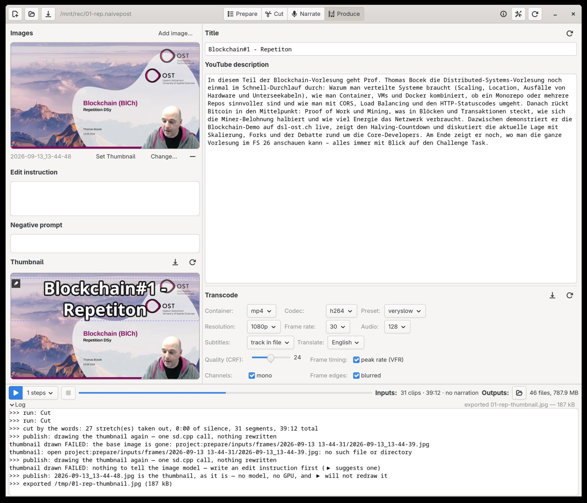

An almost linear video editor.
You record in order; it edits in order. Four workflows, run one after the other: Prepare, Cut, Narrate, Produce. Models on your own machine do the tedious half, and every answer they give is a proposal you can overrule.
Each is one tab with one ▶. Run one at a time, or tick several and press once. Shown on one session, a 42-minute lecture in 35 takes, cut to 39. Scroll sideways; click for full size.




A non-linear editor lets you put any clip anywhere. Most recorded sessions do not need that. A lecture, a talk to camera, a screen session: the order is the order it was shot, and the work is taking out what should not be there. So the timeline here is the recording, in sequence. The edit is which stretches stay.
You can still splice in a card or a still, switch which camera a moment is seen from, and paste a stretch in again. You do not rearrange. That is what makes the tedious part automatable: finding the stumbles, the retakes and the dead air is a job a model can do, and placing the cut on a word edge is a job the machine can do exactly.
Every recording on one clock. Speech to text in 60-second chunks, then a forced aligner is handed each chunk's own words and puts every one within about 20 ms of the sound. A transcript pass cleans the text with your context beside it, times and speakers passed through byte for byte. Frames go to a vision model four at a time, with the words heard over them and a running summary of what came before, and it writes one line per frame: what is happening, on that second.
Lecture: you stopped the recording when you stumbled and said it again, so the mistakes are at the joins. The model is shown one join at a time, 140 words either side, and asked to write the two takes run on as one, leaving the stumble out. Its answer is matched back against the words it was shown, so it can only ever take words away. The cut itself is then placed with no model: the surviving words fence each edge, and the audio picks the quietest moment inside the fence. What survives is a text file with a mark at every join; delete a word there, press Cut, and it is out of the video. Gaming: the model reads the whole session timeline and answers with the moments worth keeping, to a length if you name one.
The model reads what each kept clip contains and writes a line for it, with an emotion. Text to speech says it in a voice cloned from a few seconds of your own recording. A line that does not fit is spoken faster, or the clip grows, and the log says which. Turn narration off and everything that exists to carry one disappears.
Each clip encoded once, joined by stream copy, loudness-normalised over the whole. Subtitles come straight from the aligned words, no model, as .srt and .vtt; other languages are one call per language, read back by line number so a dropped line cannot shift the rest. Title, description and the thumbnail come from one call that reads your context: where you ask for a frame the video already contains, it names the second and the frame is taken as it is, with the title printed on it locally. Only when you write an edit instruction is an image model asked to draw.
Every request goes to a local server you run. Answers are cached on the exact request, pictures included, so re-running a step whose inputs have not changed costs nothing, and every step writes its own resume marker, so a run that stopped carries on where it was.
| job | model | thinking | answers with |
|---|---|---|---|
| speech to text | qwen3-asr · audio.cpp | – | text only, per 60 s chunk; it has no word times worth keeping |
| word times | qwen3-aligner · audio.cpp | – | a start and end per word, per chunk, the chunk's own words in hand; halved when the machine has no room |
| diarization, who spoke when | sortformer · audio.cpp | – | speaker turns, in a window that shrinks until the server can hold it: 90 s, then 45, then 25 |
| what is on screen | LLM · llama.cpp, vision | off | one EVENT line per frame and a running STATE, four frames a request |
| clean transcript | LLM · llama.cpp | off | the same lines, respelled; times and speakers unchanged, enforced |
| lecture joins | LLM · llama.cpp | on | the two takes run on as one; only deletions are accepted |
| gaming cut | LLM · llama.cpp | on | the segments to keep, in session seconds copied off the timeline it was shown |
| captions, speed, effects | LLM · llama.cpp | off | one call per clip each, after the cut |
| narration | LLM · llama.cpp, then index-tts2 · audio.cpp | on | a line per clip with an emotion; spoken in your cloned voice |
| title, description, thumbnail | LLM · llama.cpp | on | labelled lines; the thumbnail either as a frame's second, taken as it is, or as an instruction for the image model |
| thumbnail, drawn | qwen-image-edit · sd.cpp | – | an image from real frames of the video and the instruction; only runs when there is one, and never when a frame was named |
| subtitles in other languages | LLM · llama.cpp | off | the numbered lines, translated, one call per language |
Model, then the server it runs on. The LLM is whichever model your server lists; llama.cpp is the usual one, and any OpenAI-compatible server will do.
Thinking is on where it was measured to help and off where it was not. On the lecture joins it took the model from 15 of 29 joins matching a hand-made cut to 20 or 21, at about two minutes a join instead of seconds. The gaming cut and the narration also carry web search, for a name or a fact the footage does not show, and fall back to a plain call if a thinking one fails.
Some of the work asks no model at all. Placing a cut on a word edge, choosing the splice point inside the gap, building subtitles from the aligned words, taking a frame as the thumbnail and printing the title on it, and re-cutting from a text file you edited by hand are all arithmetic on files already on disk.
A model is never asked for a timestamp it would have to compute. It answers in words or line numbers, and the app turns that into seconds with the aligner's word times.
The audio envelope chooses where between two known words a splice falls, never which words it touches.
The transcript keeps every word; the marks are a file you can read and edit.
A run that stopped, failed or ran out of memory resumes from where it stopped.
What you tell the editor is said once, in the context box, and reaches every step from there.
Changes to how a model is asked are scored against a cut made by hand, with the unchanged prompt run again as a control.
| what | default | serves |
|---|---|---|
| an OpenAI-compatible LLM | 127.0.0.1:8731 | every text and vision job |
| audio.cpp | 127.0.0.1:8765 | speech to text, alignment, diarization, voice separation, text to speech |
| sd.cpp | 127.0.0.1:1234 | the thumbnail, when one is drawn |
| ffmpeg / ffprobe | on PATH | every frame, cut and encode |
All local by default. Nothing calls out unless you point it somewhere.
A folder ending in .naivepost, holding everything the session produced. Every file in it is readable, and every model call is written out in full under llm/, request and answer, so a wrong cut can be traced to the words that caused it.
<name>.naivepost/
naivepost.json sources, settings, context, prompts
prepare/inputs/<source>/ audio, transcript, word times
prepare/describe/ what was on screen, one line per frame
prepare/transcript/
final.txt the words of the finished video, a mark at every join
cut/cut.json the stretches that stay
produce/ the render, subtitles, thumbnail, upload text
llm/ a readable transcript of every model call
cd gui && go build && ./gui
Go 1.26, GTK4 via gotk4. go test ./... takes about 24 seconds with no network, no GPU and no servers.
{kind=link}
{kind=link}
{kind=link}
{kind=link}